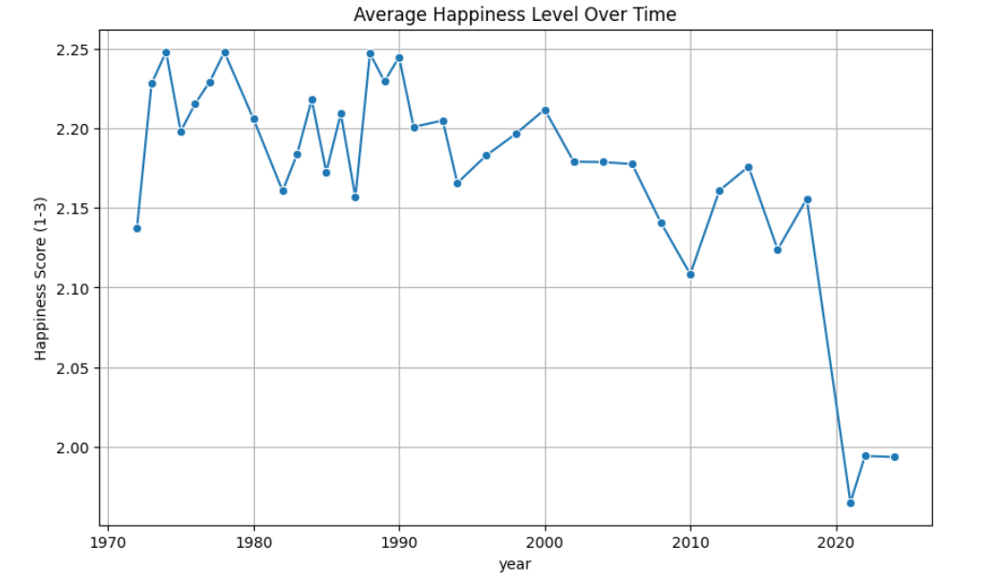
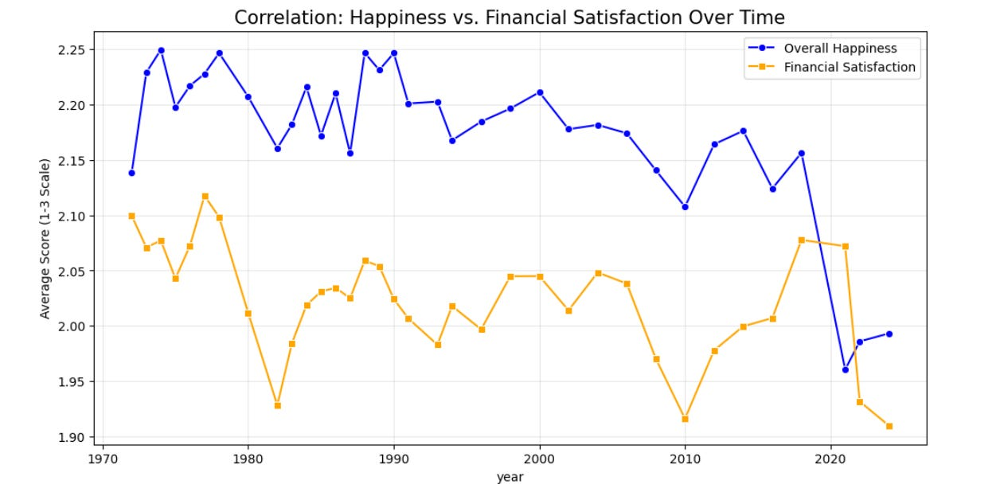

The 2019 Crater: Analyzing the Sudden Decline in American Happiness
The Sudden Drop
Survey Responses
Vibrancy Inflection
Summary
For nearly 50 years, American happiness levels fluctuated within a stable range. However, between 2018 and 2021, the data reveals a sudden and unprecedented collapse. This project analyzes the General Social Survey (GSS) dataset to visualize this "crater" and explores the technological and psychological factors—specifically screen vibrancy and algorithmic shifts—that triggered it.
Problem
While economic shocks like the 2010 housing crash caused minor dips, the post-2019 decline in subjective well-being is statistically unique. The challenge was to identify why happiness fell across every demographic—regardless of race, sex, or ideology—and why it failed to rebound after the pandemic ended.
Approach
- Data Synthesis: Cleaned 50 years of GSS records, handling missing variables and "Inapplicable" responses to create a clean longitudinal dataset.
- Categorical Quantification: Mapped qualitative survey responses ("Very Happy" to "Not Too Happy") to a numeric scale to calculate annual averages and identify the exact timing of the trend break.
- Multi-Variable Correlation: Compared happiness levels against financial satisfaction and marital status to determine if the drop was tied to economic variables or social structures.
Results
The analysis identified a "cascade of factors" peaking around 2019. The data suggests that as smartphone screen quality made digital life more vibrant than reality (OLED/3000 nits) and short-form content (TikTok) rewired attention spans, American well-being decoupled from historical norms.
Even the "Marriage Buffer"—the consistent happiness gap between married and unmarried individuals—was unable to withstand the shift. While married people remain happier on average, both groups saw a synchronized drop, suggesting a universal cultural shift rather than a localized demographic one.
Analysis Visualizations
- The Happiness Trend: This time-series visualization highlights the stable historical record versus the sharp decline that began in late 2018 and worsened through 2021.

- Financial Satisfaction vs. Happiness: Contrary to popular belief, financial satisfaction didn't drop until two years after happiness levels fell, suggesting the root cause was not purely economic.

Read the Deep Dive
I have written an extensive analysis on the "vibrancy gap" and why our phones became more enticing than real life on my Substack: Why did Americans suddenly get a lot more unhappy?